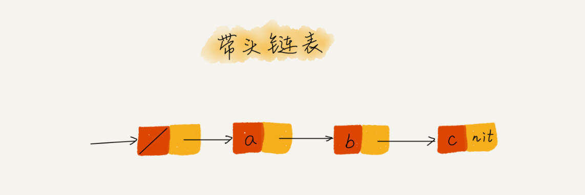

数据结构与算法之美
Table of Contents
01 | 复杂度分析
时间复杂度
大 O 时间复杂度表示法: T(n)=O(f(n))
n 表示数据规模， T(n) 表示代码运行的耗时， f(n) 表示每行代码执行次数的总和，是一个公式， O 代表 T(n) 和 f(n) 成正比。
大 O 时间复杂度表示代码随规模增长的变化趋势，并不是真正的执行时间，所以叫 渐进时间复杂度（asymptotic time complexity） ，简称 时间复杂度 。
分析方法：
- 只关注循环次数最多的一段代码
- 加法法则：总复杂度等于量级最大的那段代码的复杂度
- 乘法法则：嵌套代码的复杂度等于嵌套内外代码复杂度的乘积
常见时间复杂度分析：

其中 O(\({2^n}\)) 和 O(n!) 为非多项式量级，其他为多项式量级。非多项式量级算法会随着规模 n 的增大，执行时间急剧增加，是非常低效的算法，我们主要 关注 多项式时间复杂度 ：
O(1)
只要代码执行时间不随着 n 的增大而增长，时间复杂度即为
O(1)，如果代码中不含有循环、递归等类型代码，成千上万行代码的时间复杂度也是O(1)O(logn)、O(nlogn)
i = 1 while i < n: i = i * 2
上面这个循环代码执行次数可以通过 2^x=n , 求得 x=log2n ，则时间复杂度为 O(log2n) ,如果换成 i * 3 ，那么时间复杂度为 O(log3n) ,
因为对数之间是可以相互转换的，所以可以忽略对数的“底”，统一表示为 O(logn)。O(nlogn) 自然就是循环嵌套了，O(nlogn) 也是一种比较常见的算法时间复杂度，
如归并排序、快速排序的时间复杂度都是 O(nlogn)。
- O(m+n)、O(m*n)
此类时间复杂度是由两个数据的规模决定的
def cal(m, n):
i = j = 1
sum1 = sum2 = 0
while(i < m):
sum1 += i
i++
while(j < n):
sum2 += j
j++
return sum1 + sum2
我们无法估计 m 和 n 的量级谁大，就不能简单地使用加法规则，忽略掉其中一个，所以算法复杂度为 O(m+n)，如果是嵌套的，则乘法规则依然有效即时间复杂 度为 O(m*n)。
空间复杂度分析
空间复杂度全称 渐进空间复杂度(asymptotic space complexity) ，表示算法的存储空间和数据规模之间的增长关系。
可以粗略的估计，越高阶复杂度的算法，执行效率越低。 常见的复杂度从低阶到高阶： O(1)、O(logn)、O(n)、O(nlogn)、O(n2)

最好、最坏、平均、均摊时间复杂度
- 最好情况时间复杂度（best case time complexity） : 就是在最理想的情况下，执行代码的时间复杂度。
- 最坏情况时间复杂度（worst case time complexity） : 就是在最糟糕的情况下，执行代码的时间复杂度。
- 平均情况时间复杂度 : 全称应该叫做 加权平均时间复杂度 或者 *期望时间复杂度*。
- 均摊时间复杂度 ： 对一组数据结构连续操作时，大部分情况下时间复杂度都很低，只有个别情况下时间复杂度比较高，这些操作时间存在前后的时序关系，
这个时候可以尝试使用 摊还分析 （平摊分析），看能否将较高时间复杂度的耗时平摊到时间复杂度较低的操作上； *一般是可以使用均摊复杂度分析的场合，均摊时间复杂度=最好情况时间复杂度*。
02 | 数组：为什么很多编程语言中数组都从0开始编号？
如何实现随机访问？
数组（Array）是一种线性表数据结构，用一组连续的内存空间，来存储一组具有相同类型的数据 。
定义中的几个概念：
- 线性表：数据排列像“线”一样的结构，只有前后两个方向，如数组、栈、队列、链表等

- 非线性表: 数据之间不是简单的前后关系，如：树、堆、图等

- 连续的存储空间和相同的数据类型：正是因为这两点，数组才具备了“杀手锏”的特性：随机访问。
以长度为10的数组为例 int[] a = new int[10] ，内存块的首地址为 base_address=1000

计算机会给每个内存单元分配地址，通过地址来访问内存中的数据，寻址公式： a[i]_address = base_address + i * data_type_size 。
数组适合查找操作，但时间复杂度不是 O(1)，即使是排好序的数据，使用二分查找，时间复杂度也是 O(logn)，所以，准确的表述应该是： *数组支持随机访问，根据下标随机访问的时间复杂度为 O(1)*。
数组的插入和删除，最好情况时间复杂度为 O(1) 即从末尾插入或删除元素；最坏时间复杂度为 O(n) 即从开头插入或删除元素，平均时间复杂度为 O(n)，
所以 a[k]_address = base_address + k * type_size ，而如果数组从 1 开始，那么 a[k]_address = base_address + (k-1) * type_size
有大量的搬移操作。
数组为什么要从 0 开始
从数组的存储模型上来看，“下标”最确切的定义应该是“偏移(offset)”， a[0] 就是偏移为 0 的位置，a[k] 表示偏移 k 个 type_size，
所以 =a[k]_address = base_address + k * type_size ，而如果数组从 1 开始，那么 a[k]_address = base_address + (k-1) * type_size ，
每次随机访问数组，多了一次减法运算，对 cpu 来说就多了一次减法指令，数组作为基础的数据结构，随机访问又是基础操作，所以效率的优化需要
做到极致。当然也有可能是 C 语言使用 0 作为数组下标的开始，其他语言纷纷效仿。
03 | 链表
链表和数组的区别

数据分配的存储空间需要是连续的，而链表则不需要连续。
链表分类
单链表

链表的节点除了要存储数据之外还要记录下一个节点的地址，我们称之为后继指针 next 。第一个节点称为 头节点 ， 记录链接的开始地址，最后一个节点称为 尾结点 ，尾结点的下个地址指向空地址 NULL。
链表的插入和删除*操作*时间复杂度为 O(1)，但查询需要遍历整个链表，所以时间复杂度为 O(n)。

循环链表

循环链表，首尾相连，是和处理具有环形结构特点的数据
双向链表

单链表只有一个方向，双向链表存储后继指针 next 的同时，还有一个前驱指针 prev ，所以数据相同时，双向链表会消耗更多的存储空间。 但双向链表支持双向遍历，在特定情况下，双向链表的插入、删除操作比单链表更高效。
以删除操作举例：
- 1. 删除节点中“值等于给定值”的节点
- 2. 删除给定指针指向的节点
对于第一种情况，单链表和双向链表都需要遍历整个链表，找到对应节点进行删除，尽管 删除 操作本身的时间复杂度为 O(1)，但遍历查找的时间复杂度为 O(n)，
所以时间复杂度为 O(n);
对于第二种情况，因为双向链表存储了前驱指针，所以可以直接删除，时间复杂度为 O(1)。但单链表还需要遍历，直到 p-next = q ，说明p是q的前驱节点，才能删除，所以时间复杂度仍为 O(n)。
如何基于链表实现 LRU 缓存淘汰算法？
我们可以维护一个有序的单链表，越早访问的节点越靠近尾部。
当有一个新数据访问时，遍历单链表，
如果命中，把对应节点从原位置中删除，再重新插入到链表头部。
如果没有命中，将节点插入到链表头部，需要区分两种情况：
- 链表已满，需要删除最后一个节点，并将新节点插入到头部
- 链表未满，直接将新节点插入到头部
无论链表满没满，都需要遍历链表，所以时间复杂度为 O(n)。
如何轻松写出正确的链表代码？
技巧一：理解指针或引用的含义
不管指针还是引用，其实就是只存储数据的内存地址 。
将某个变量赋值给指针，实际上是将这个变量的地址赋值给指针，或者说，指针存储了这个变量的内存地址，通过指针可以找到这个变量。
如：
p->next = q ，是指 p 节点中的 next 指针存储了 q 的地址
p-next = p->next->next , 是指 p 节点的 next 指针存储了 p 节点下下个节点地址
技巧二：警惕指针丢失和内存泄露

技巧三：利用哨兵简化实现难度

针对链表的插入、删除操作，需要对第一个节点的插入和最后一个节点的删除进行特殊处理，可以引入*哨兵节点*，不管链表是否为空，head指针会一直指向哨兵节点， 带哨兵节点的链表称作带头链表。
技巧四：重点留意边界条件
检查边界条件是否考虑全面，如：
- 如果链表为空，是否能正常工作
- 如果链表只包含一个节点或者两个节点，是否正常工作
- 代码逻辑再处理头、尾节点时是否正常工作
技巧五：举例画图，辅助思考
技巧六：多谢多练，没有捷径
- 单链表翻转
- 链表中环的检测
- 删除链表倒数第n个节点
- 求链表的中间节点